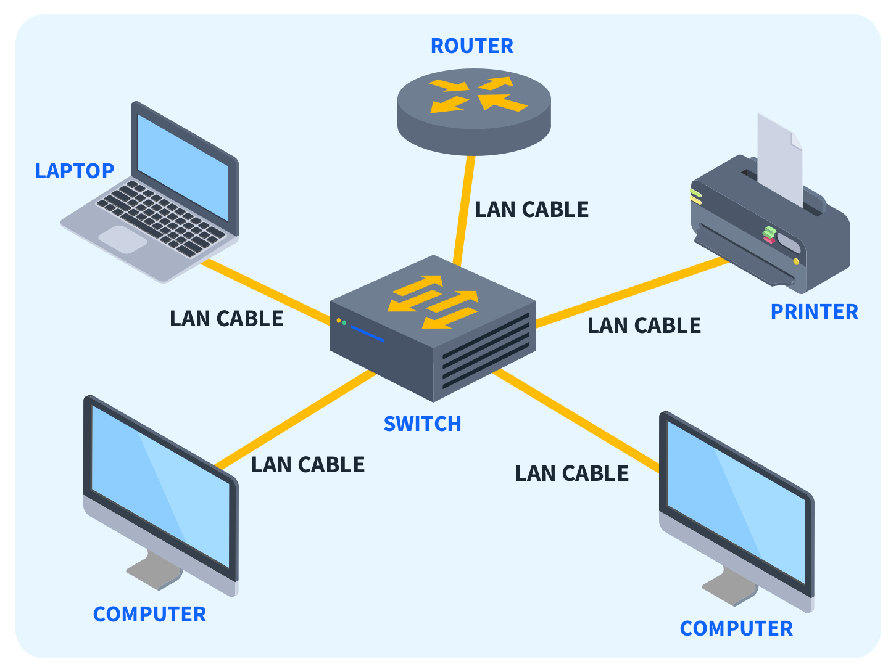
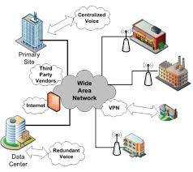

Types of Networks
1. Local Area Network (LAN)
A Local Area Network (LAN) is a network confined to a small geographic area, such as a home, office, or school. It connects devices like computers, printers, and servers to share resources such as files and internet access.
- Speed: Typically high-speed (100 Mbps to 1 Gbps).
- Geographical Scope: Limited to a single building or campus.
- Examples: Office network, Wi-Fi at home.
Example: A school uses a LAN to connect student computers to a central file server and printer.

2. Wide Area Network (WAN)
A Wide Area Network (WAN) spans a large geographical area, often connecting multiple LANs. It uses public or private communication links like satellite, fiber optics, or leased lines.
- Speed: Typically slower than LANs (10 Mbps to 100 Mbps or higher).
- Geographical Scope: Covers large regions, countries, or continents.
- Examples: The internet, corporate networks connecting offices worldwide.
Example: A multinational company uses a WAN to connect its offices in New York, London, and Tokyo for secure data exchange.

3. Metropolitan Area Network (MAN)
A Metropolitan Area Network (MAN) is larger than a LAN but smaller than a WAN, typically covering a city or a large campus. It is often owned and operated by organizations or service providers.
- Speed: Faster than WAN but similar to LAN speeds.
- Geographical Scope: Covers a city or metropolitan area.
- Examples: Cable TV networks, city-wide Wi-Fi networks.
Example: A city government uses a MAN to connect public services like libraries, schools, and administrative offices.